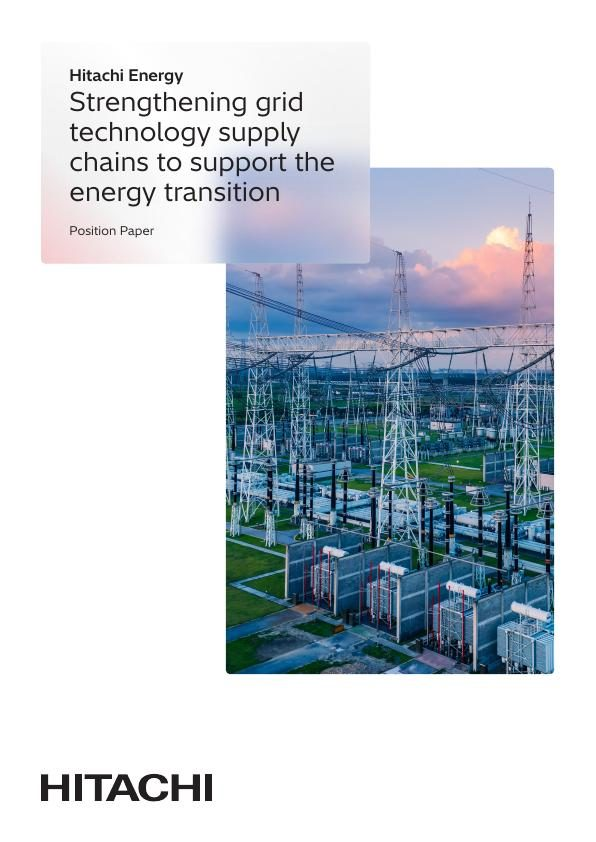

La transición tiene lista de espera
El mundo ha decidido electrificarse. Todavía no ha construido las fábricas que fabrican los equipos para hacerlo.
Cada parque eólico, cada centro de datos, cada ferrocarril eléctrico y cada bomba de calor tienen algo en común que nunca sale en la foto de la inauguración: un transformador, una celda de aparamenta, un tramo de cable, un convertidor. Alguien tiene que fabricarlos. Ahora mismo, no hay suficientes manos para hacerlo.
Es el cuello de botella menos visible de la transición energética y, según el informe, uno de los más decisivos. Puedes aprobar una red y financiarla. No puedes instalar una red que no puedes comprar.
El tamaño del pedido
Las cifras de la Agencia Internacional de la Energía son las que hay que recordar. Hasta 2040, el mundo debe añadir 65 millones de kilómetros de líneas de transporte y distribución y renovar otros 45 millones. Es la longitud de todas las redes del planeta, construida de nuevo, en unos quince años.
Detrás hay una cola. En 2026, más de 2.500 gigavatios de proyectos de generación, almacenamiento y grandes consumos esperaban una conexión a la red en todo el mundo. Gran parte de esa espera es equipamiento.

Por qué no se pueden construir más fábricas mañana
Una nueva planta de transformadores de potencia tarda hasta cinco años desde la decisión hasta la primera entrega. Ampliar una existente lleva hasta tres. El acero especial, el cobre, los bobinadores y los técnicos de ensayo cualificados tienen cada uno sus propios plazos. Si a eso se suman las disputas comerciales y algún repunte de la demanda, el resultado es una cadena de suministro que no puede adaptarse a la velocidad que exige la transición.
Las recomendaciones del informe giran en torno a la agilidad: compromisos a largo plazo de los clientes para que los fabricantes puedan invertir antes de recibir pedidos, diseños más normalizados y fabricación más cerca de los mercados a los que sirve.
Primero, las fábricas
Hitachi Energy ha hecho la apuesta que describe el informe. Un programa global de 9.000 millones de dólares para ampliar capacidad y plantilla, el mayor del sector. Una inversión histórica de 1.000 millones de dólares en fabricación en Estados Unidos. 300 millones en China, 195 millones en Canadá, 150 millones en América Latina y nueva capacidad de transformadores en India, Turquía, Suecia, España y Finlandia.
Nada de esto es un producto. Todo ello es la razón por la que los productos llegan. La transición tiene lista de espera. El trabajo es acortarla.

Reforzar las cadenas de suministro de tecnología de red
El documento de posición completo sobre las medidas necesarias para desbloquear el suministro de las tecnologías de red de las que depende la transición energética.